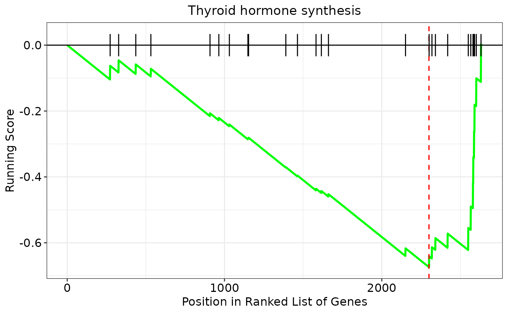

Create a GSEA plot that displays the running enrichment score (ES) for a given pathway
Source:R/visualization.R
gseaPlot.RdThis function creates a classic enrichment plot to show the results of
gene set enrichment analyses (GSEA). In particular, this function takes as
input GSEA results originating from the enrichGenes() function, and
returns a ggplot2 object with GSEA plot. In this kind of plots, the
running enrichment score (ES) for a given pathway is shown on the y-axis,
whereas gene positions in the ranked list are reported on the x-axis.
Usage
gseaPlot(
enrichment,
pathway,
showTitle = TRUE,
rankingMetric = FALSE,
lineColor = "green",
lineSize = 1,
vlineColor = "red",
vlineSize = 0.6
)Arguments
- enrichment
An object of class
FunctionalEnrichmentcontaining enrichment results- pathway
It must be the name of a significantly enriched term/pathway for which we want to produce a GSEA plot (e.g. 'Thyroid hormone synthesis')
- showTitle
Logical, whether to add the name of the pathway/term as plot title. Default is TRUE
- rankingMetric
Logical, whether to show the variations of the ranking metric below the plot. Default is FALSE
- lineColor
It must be an R color name that specifies the color of the running score line. Default is
green. Available color formats include color names, such as 'blue' and 'red', and hexadecimal colors specified as #RRGGBB- lineSize
The line width of the running score line. Default is
1- vlineColor
It must be an R color name that specifies the color of the vertical line indicating the enrichment score (ES). Default is
red. Available color formats include color names, such as 'blue' and 'red', and hexadecimal colors specified as #RRGGBB- vlineSize
The line width of the vertical line indicating the enrichment score (ES). Default is
0.6
Author
Jacopo Ronchi, jacopo.ronchi@unimib.it
Examples
# load example FunctionalEnrichment object
obj <- loadExamples("FunctionalEnrichment")
# extract results
res <- enrichmentResults(obj)
# plot results
gseaPlot(obj, pathway = "Thyroid hormone synthesis")
